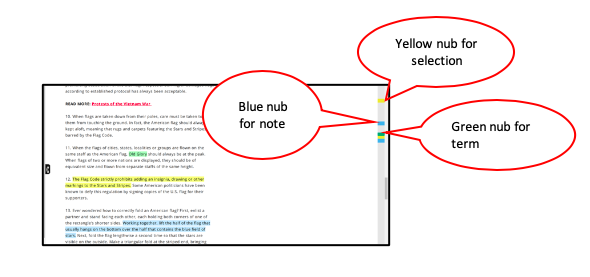
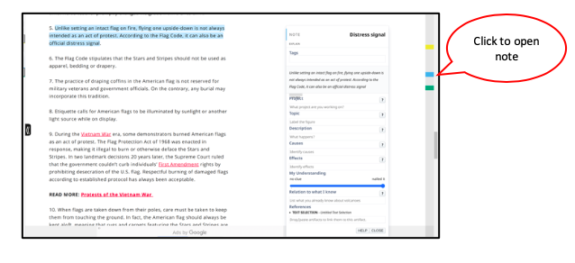

The gutter shows where you have created selections, notes, and terms.
What is a nub?
A nub is a colored bar inside Chrome's scroll bar. It shows where you made a selection.
Clicking on a nub shows you the selections,notes or terms you made on the page.
